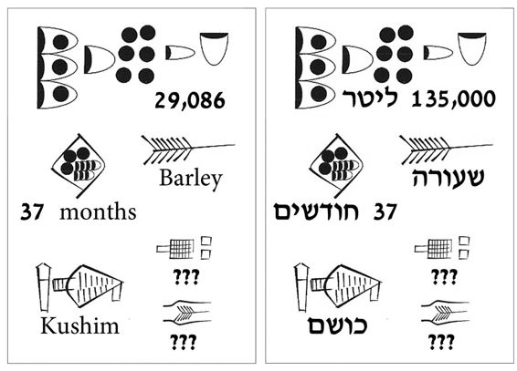

13. Ein Tontäfelchen mit einem Verwaltungstext aus der Stadt Uruk, zirka 3400 – 3000 v. u. Z. Das Täfelchen bestätigt den Erhalt von 29.086 Maß (etwa 135000 Liter) Gerste über einen Zeitraum von 37 Monaten durch einen gewissen Kushim. »Kushim« könnte eine allgemeine Bezeichnung für einen Beamten gewesen sein, es könnte sich aber auch um den Name eines bestimmten Menschen handeln. Sollte dieser Kushim tatsächlich eine Person gewesen sein, dann wäre er der erste Mensch in der Geschichte, den wir namentlich kennen. Alle älteren Namen – die Neandertaler, die Natufianer, die Höhle von Chauvet oder Göbekli Tepe – sind neuzeitliche Erfindungen. Wir wissen nicht, wie die Erbauer von Göbekli Tepe ihre Kultstätte nannten. Mit der Erfindung der Schrift hören wir die Geschichte mit der Stimme ihrer Protagonisten. Wenn Kushims Nachbarn ihn suchten, dann riefen sie tatsächlich »Kushim!«. Es ist bezeichnend, dass der älteste überlieferte Name einem Buchhalter gehört, und nicht einem Propheten, Dichter oder Eroberer.44
44 Andrew Robinson, The Story of Writing (New York: Thames and Hudson, 1995), S. 63; Hans J. Nissen, Peter Damerow und Robert K. Englung, Archaic Bookkeeping: Writing and Techniques of Economic Administration in the Ancient Near East (Chicago, London: The University of Chicago Press, 1993), S. 36.